LSFRC Conference - “Beyond Borders: Empires, Bodies, Science Fictions”
Organised by the London Science Fiction Research Community, alongside members of Science Fiction Beyond the West and our London Chinese Science Fiction Group.
10th - Saturday 12th September 2020
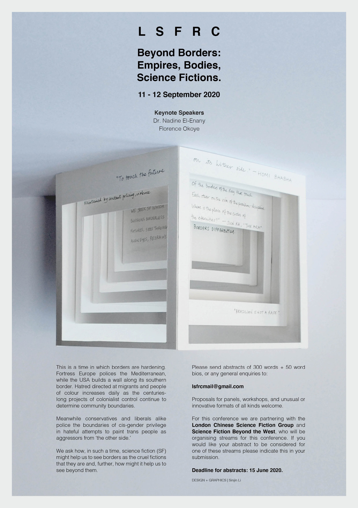'Beyond Borders: Empires, Bodies, Science Fictions' took place online from Thursday 10th to Saturday 12th September. It was organised by the London Science Fiction Research Community, alongside members of Science Fiction Beyond the West and our London Chinese Science Fiction Group's Lyu Guangzhao.
"For our 2020 conference, the LSFRC invites papers exploring borders in SF. We understand this theme broadly but are particularly interested in papers which address borders as politicised tools used to uphold empires, divide communities and police the bodies of those most marginalised. Our understanding of SF is likewise broad, and we in no way intend to use the traditionally acknowledged borders to the genre to exclude those whose work cannot be neatly defined by the term ‘science fiction."
There were excellent keynote talks from Dr Nadine El-Enany (author of (B)ordering Britain: Law, Race and Empire) and Florence Okoye (Afro Futures_UK)!
As part of the Chinese SF stream, translator Emily X. Jin and author Chen Qiufan participated as guests, and we heard many amazing papers from our peers! Our LCSFG's Angela Chan also presented a paper on climate change in Chinese SF and chair the Creator Roundtable for Chen Qiufan, and artists Linda Stupart and Larissa Sansour.
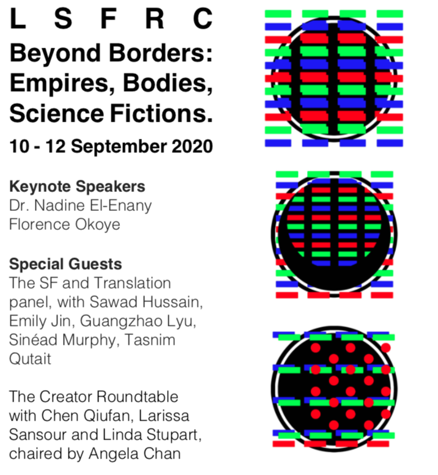
会议回顾 | 伦敦科幻研究协会：超越边界：帝国、身体与科幻文学
Original 老吕 in UK 科幻研究在伦敦 2020-09-14
首先！让我们感谢所有筹备会议的小伙伴们！!
Francis Gene-Rowe (Royal Holloway); Katie Stone (Birkbeck); Sasha Myerson (Birkbeck); Tom Dillon (Birkbeck); Avery Delany (Goldsmiths); Rachel Hill (Goldsmiths); Ibtisam Ahmed (Nottingham); LYU Guangzhao (UCL); Sinéad Murphy (Freie Universität Berlin); Tasnim Qutait (Uppsala University, Sweden)
和之前一样，会议同时有三个专题，但老吕只有一个，分身乏术，所以我只记录了我主持或旁听的内容：
- 主旨演讲1：Dr. Nadine El-Enany
- 专题1C：Pass the Point of No Return (Chinese SF 1)
- 专题2A：Dystopia, Apocalypse and the Border
- 专题3C：Upon the Wasteland (Chinese SF 2)
- 专题4B：Pliable Futures
- 专题5B：Walls, Maps, Deserts: Unreal Geographies
- 专题6A：Science Fiction: Capitalist Tool, Revolutionary Weapon
- 主旨演讲二：Florence Okoye
新冠时代的学术会议虽然超越了地理上的限制，朋友们不必舟车劳顿前往会议地点（或许“出去玩”本身也是很多人开会的目的？），但也着实把各位专家学者都变成了电脑技术人才。在克服了网络连不上、麦克有回音、软件不会用、猫子乱入，以及主持人误操作将所有人赶了出去（不是我！）等一系列问题之后，伦敦科幻协会（LSFRC）2020年会“超越边界：帝国、身体与科幻文学”于9月10日到12日在Collaborate平台成功举行。由于会议不需要与会者亲自到前往伦敦，会议的规模对于LSFRC来说可谓前所未有，共有53位学者，在18个专题中，分享了自己的观点。我们伦敦中国科幻协会在此次会议中有两个专题，为会议的多元化做出了贡献。在会议最后，LSFRC公布了下一年度的活动关键词——行动与反抗（Activism and Resistance），这也将成为LSFRC 2021年会的主题。
此次会议还包括两个圆桌讨论。在9月10日举行的科幻翻译“座谈会”中，我们邀请到知名译者金雪妮Emily（英语——汉语）以及Sawad Hussain（英语——阿拉伯语）共同参与讨论，与观众交流了她们在翻译过程中遇到的挑战，以及从中获得的感悟。同时，她们也交流了对“非西方”科幻小说的理解，认为翻译这一过程本身便是跨越“边界”的过程，旨在打破原有话语中心并建立新的文化逻辑。于9月12日举行的第二个圆桌讨论则邀请到著名科幻作者陈楸帆、Larissa Sansour以及艺术家Linda Stupart。在Angela Chan的主持下，他们探讨了如何在作品中融入多种艺术呈现方式，包括文本叙事、平面设计以及影像记录。同时，他们也提到，科幻作品需要展现出一定的时代担当，并且呼吁不同族群和社会阶层之间的平等和正义。
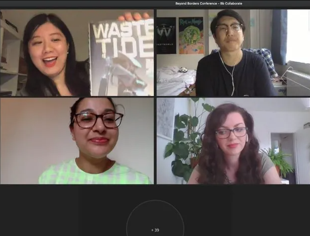
本次会议的两次圆桌讨论受到与会者的广泛关注
下面是此次会议的部分专题汇总：
主旨演讲1：Dr. Nadine El-Enany
在会议开始的主旨演讲中，伦敦大学伯克贝克学院（Birkbeck, University of London）准教授（Reader） Dr. Nadine El-Enany首先介绍了英国帝国主义时期的行政规划、种族制度，以及“边界”概念如何在其殖民过程中强化了“边缘——中心”这一结构。她指出，少数族裔（包括澳大利亚以及美洲的原住民）在英国与欧洲的殖民历史中，被贴上了“属下阶层”（Subaltern）的标签。人种之间的“不同”被不多制造并强化，最终成为殖民者合法化其殖民地统治的途径。随后，El-Enany 将讨论重心放在了近几十年来后殖民语境中的移民问题。从自身的法律背景出发，她探讨了在英国法律体系中，少数族裔所遇到的系统性歧视。因此，El-Enany认为，少数族裔在社会福利、医疗、教育、就业机会等方面的保护，需要社会各个方面加以重视。
Dr. Nadine El-Enany 是伯克贝克学院种族与法律研究中心主任
随后，她着重探讨了1981年英国国民身份法案，并指出这是自“大英帝国”逐渐瓦解以来，英国政府第一次从法律层面人为划分了不同种族，将英国“本土”居民与英联邦属民区别开来，实行不同的社会与文化政策。因此，外来移民在伦敦，甚至在整个英国本土，都无法找到完整的归属感，他们被视为“异族”（Alien）或“他者”。在主旨演讲的最后，El-Enany引用了Doreen Massey对于后殖民、现代性以及全球化的论断，认为我们先亟需打破种族之间人为建构的种种“边界”。这些边界有可能是物理上的边界，但更重要的则是精神与意识形态的边界。科幻作品无疑可以在这一方面为我们提供更多的叙事可能性。 1981年国民身份法案被诸多学者视为“帝国主义”英国向“民族主义”英国过渡的里程碑
专题1C：Pass the Point of No Return （Chinese SF 1）/ 越过不归之处
在专题开始，伦敦大学皇家霍洛威学院（Royal Holloway, University of London）的Yen Ooi探讨了王侃瑜在2020年出版的短篇小说《语膜》。她结合自身成长的复杂语言环境（客家话、福建话、英语、马来语），说明了不同语言所塑造的不同世界观，以及这些世界观彼此之间难以跨越的边界。结合文本细读，Ooi强调了语言在母亲艾莎、与儿子雅克之间造成的隔阂，以及语言的“纯净”所有可能造成的民族主义倾向。她引用Rey Chow的理论作品《新教种族与资本主义精神》（The Protestant Ethnic and The Spirit of Capitalism；该作品的标题致敬了马克思·韦伯的论著《新教伦理与资本主义精神》The Protestant Ethic and The Spirit of Capitalism），指出了语言与身份认同彼此之间的紧密联系，以及二者在晚期资本主义时代的适应性变化。（我们的中国科幻研讨会在五月份讨论了《语膜》，研讨回顾请看【这里】。）《语膜》于2019年首先发表于知名主流文学杂志《收获》
随后，我们伦敦中国科幻协会的负责人之一Angela Chan再次为我们梳理了有关“边界”的相关概念，并将“中国科幻”视为挑战“科幻西方中心论”的一种重要尝试。她进而介绍了与中国相关的环境主义运动，讨论了环境主义与诸多中国科幻小说之间的联系，包括郝景芳《北京折叠》、王侃瑜《岛的故事》（Angela与王侃瑜合作，在鹿特丹设立了与本篇故事相关的艺术展，详细信息在【这里】）、顾适《为了生命的诗和远方》、王晋康《转生的巨人》以及陈楸帆的《荒潮》。她认为，中国科幻如果希望将自身置于“世界文学”或“世界科幻”的框架之中，其故事题材也应超越中国本土，关注中国在非洲以及东南亚地区的经济和政治影响。（Angela讨论的多部作品都是我们之前讨论过的作品，相关研讨回顾请点击相应的作品题目。）
Angela创立的艺术平台"Worm: art + ecology"致力于讨论气候变化相关议题，在伦敦已小有名气
澳门大学的Jan Marvin Goh为我们介绍了菲律宾华裔作家查尔森·王（Charlson Ong）的著名短篇故事《我们谈论的其它国家》（Of that Other Country We Now Speak）。据他观察，Ong的作品近些年来在学术界广受关注，其故事中涉及到的离散族裔(Diaspora)元素，以及故事角色的含混身份（包括身体、语言和意识形态），也成为读者相互探讨的重要话题，并且体现了离散族裔游离在多种不同文化边缘时体会到的疏离感与不安全感。从该角度出发，Goh借鉴了霍米·巴巴的理论，从后殖民的角度探讨了时间感与空间感的模糊和融合，并通过《其它国家》中展现的哥特与惊悚元素，为我们介绍了Ong故事中各个角色在寻找身份认同的过程中感受到的焦虑与困惑。
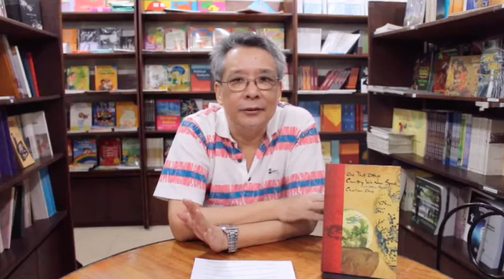 Charlson Ong和他的作品在国内与欧美地区的影响力与日俱增
专题2A：Dystopia, Apocalypse and the Border / 废托邦、末日与边界
土耳其马尔马拉大学（Marmara Üniversitesi）的Seyedhamed Moosavi通过对诸多“废托邦”(Dystopia)小说和电影的研究，探讨了“边界”概念（包括地理上与政治上的边界）在废托邦这一体裁中的重要作用。他认为，废托邦的边界对其界内的居民来说，除了物理上的隔离之外，有着强烈的心理作用。在Semih Kaplanoglu导演的电影《谷粒》（Grain，2015）中，荒芜贫瘠的农村地区与较为优越的城市部分被隔离开来，其边界建有为数众多的防御塔，如果个人敢于跨越，就会被无情烧死。随后，通过讨论电影《银翼杀手2049》与乔治·奥威尔的《一九八四》，他指出，某些废托邦社会会将“外面”形容为无比危险的环境，为“界内”的个体设计了虚假的图画；而另一种废托邦则会无限贬低“外面”的人和生物，强化后者的他者地位。所以，通过这些方法，Moosavi指出，边界不仅可以制造地理上的隔阂，同时也可以构建心理与时间上的割裂。《谷粒》中描绘的防御塔
在Moosavi之后，伦敦帝国理工学院（Imperial College）的Glyn Morgan详细解读了Colson Whitehead的小说《第一区》（Zone One ，2011)。在故事中，“第一区”指代的是曼哈顿某一与其它地区隔离开来的“飞地”。Morgan顺承了目前学界针对这一故事的主流观点，即通过刻画一个僵尸末日的情景，表现出了人们在后9-11时代的心理创伤。同时，Morgan也介绍了《第一区》如何能够帮助我们理解全球流行病、中产阶层化（Gentrification）、国家暴力以及种族冲突。他借用了故事中描述的“墙”以及这座墙所建构的空间与话语的隔离，着重探讨了在新冠疫情期间“口罩”衍生出的政治和文化意义。同时，他也探讨了《第一区》中的气候隐喻，强调了“洪水”在故事中的重要作用。
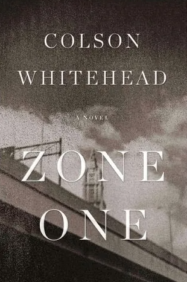 《第一区》在一定程度上融合了通俗文学与纪实文学的叙事特征
专题最后，雅加达沙亚里夫国立伊斯兰大学（Universitas Islam Negeri Syarif Hidayatullah Jakarta）的Hasnul Insani Djohar探讨了G. Willow Wilson的著名小说《看不见的阿里夫》（Alif the Unseen ，2012）。通过分析网络空间与现实的边界，Djohar认为这部小说揭示了跨国社会中的边界的瓦解，并且动摇了现实世界中的诸多边界。故事里，主人公生活在不同的空间，拥有无限的身份，这揭示了身份是灵活和可变的。因此，“中心——边缘”这一结构逐渐瓦解，不再存在特权阶层，每个人、每个群体都能够发出自己的声音。
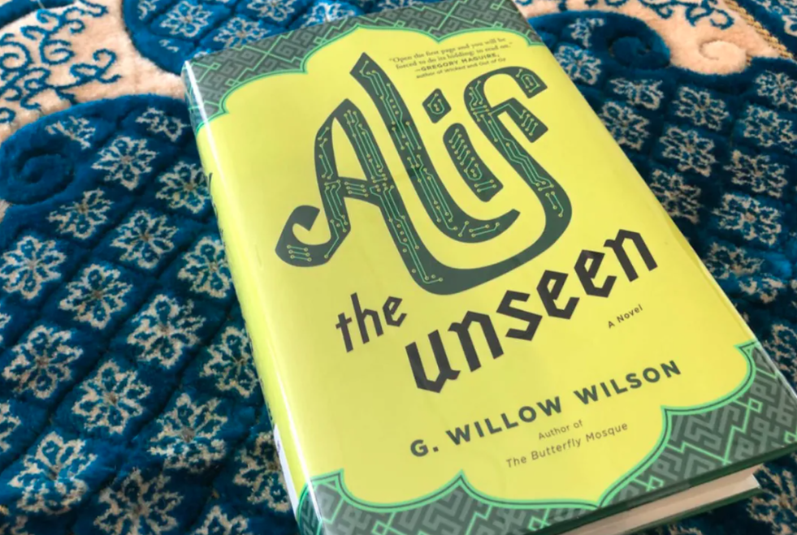 《看不见的阿里夫》也可被视为“中东赛博朋克”的重要作品之一
专题3C：Upon the Wasteland (Chinese SF 2) / 荒原之上
在中国科幻系列专题的第二部分，西澳大学（The University of Western Australia）的倪帆探讨了陈楸帆《荒潮》以及作品中“乡愁”（nostalgia）与“乡痛”（solastalgia）之间的联系和区别。她介绍了“乡愁”一词的历史含义，体现出当代社会与经济模式对于“乡愁”概念的影响。随后，她从构词法的角度介绍了“乡痛”这一概念，并将其放在当代“人类世”的话语之中，显示出这一术语暗含的后结构主义特征。她引用段义孚的相关论述，认为“乡痛”与“乡愁”都体现出了强烈的“恋地情节”。在之后的文本分析中，倪帆讨论了故事中陈开宗和小米对于各自家乡不同却又相似的感情。通过构建《荒潮》与鲁迅《故乡》之间的联系，倪帆认为，随着人类世的来临，人们对于故乡的情感也会相应发生变化，而这些变化在文本中的再现，则应视为生态政治批评的重要组成部分。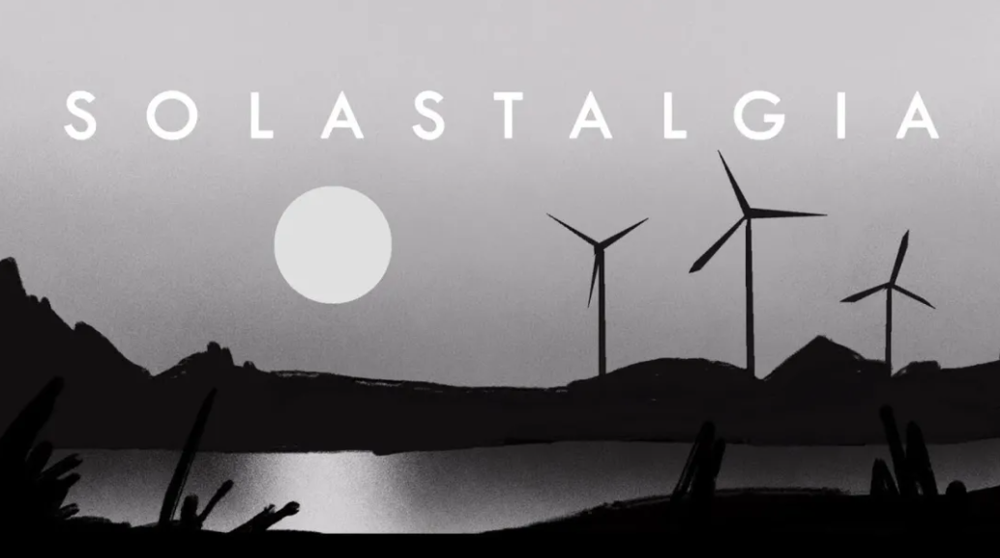 "Solastalgia" (Solace + Nostalgia) 描述了一种由环境变化引起的情感或生存的困扰
在此之后，明尼苏达大学的阳小莉同样将《荒潮》作为其文本分析的主要内容。她从环境主义的角度出发，强调了现实中贵屿的垃圾处理产业及其所造成的环境危害。她谈到了故事中硅屿的氏族垄断企业以及美国跨国公司，认为这些氏族和公司的商业与市场活动，构建了一个认为的“毒性空间”（Toxic space）。阳小莉借鉴了Rob Nixon的理论作品《缓慢暴力与贫困环境主义》（Slow Violence and the Environmentalism of the Poor）。《荒潮》中的慢性环境暴力，很容易被资本所忽略，加剧了生态系统的脆弱性，也加剧了弱势群体的脆弱性。这些人像故事中的垃圾人一样，他们贫穷，无权无势，并且经常流离失所。她进而指出，垃圾人用以维持生命的环境正在被各种垃圾和毒物侵蚀，但我们更需要认识到的，则是资本在其中发挥的作用。
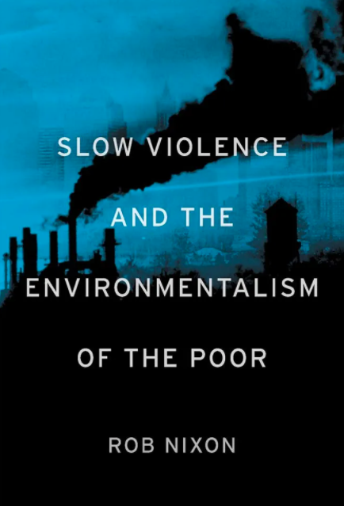 Nixon的著作已经成为生态批评领域不可或缺的理论基础
本次会议中国科幻相关专题的最后一篇论文来自华南师范大学的刘灵，她从“死因政治”(Necro-politics)的角度研究了电影《流浪地球》中可弃置的身体和生命。刘灵归纳了电影涉及的三种可以被舍弃的生命，即老人、病人或残疾人，以及动物。在此基础上，刘灵指出，《流浪地球》中各个地下城都设立了监管严格的边界，将有资格生存下来的群体同没有资格的群体隔离开来，而评价某个个体是否“有资格”的标准，则是该个体所能提供的社会与经济生产力。所以，《流浪地球》并不仅仅是一部关于末日生存的电影，更是一部有关当代社会的寓言，反映了人们在晚期资本主义话语中的挣扎。
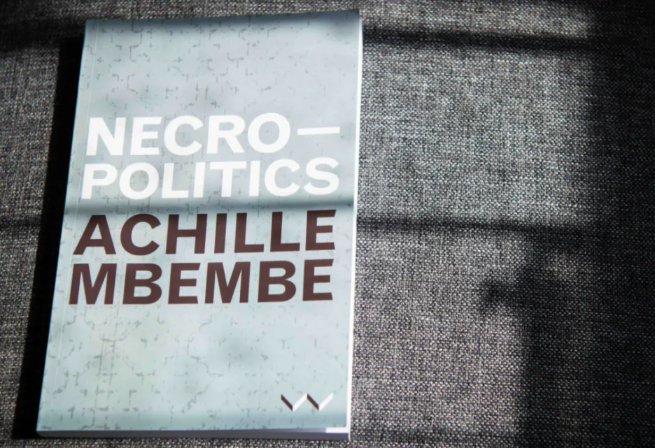 Achille Mbembe的“死因政治”理论经常与“生命政治”（Biopolitics）联系在一起
专题4B：Pliable Futures / 软性未来
在会议第二天，佛罗伦萨大学（University of Florence）的Giulia Iannuzzi通过对十八世纪出版的《二十世纪回忆录》（Memoirs of the Twentieth Century）的个案研究，探讨了十八世纪欧洲文化中作为世俗化想象空间的多种未来意象。她首先介绍了英国在十八世纪在全球范围内取得的商业成就，以及其本土与殖民地之间频繁的贸易往来。与此同时同时，Iannuzzi也强调了教会在这一过程中的重要影响。在随后的文本分析中，她认为，《回忆录》对过去帝国的兴衰进行了反复的反思，既着眼于作者已知的历史，如罗马的历史，也着眼于小说中的未来过去，利用推测性的情景作为思维实验，使人们能够理解未来的大英帝国如何避免像曾经的所有帝国那样走向衰落。
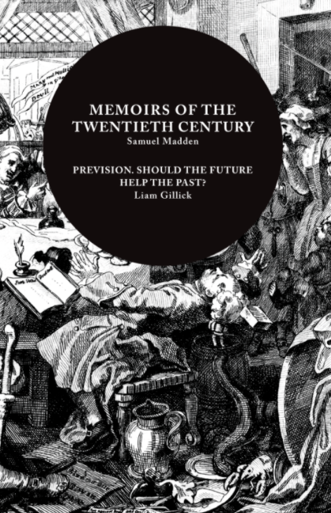 早在十八世纪，“未来意象”便已成为人们构建或然性与可能性的重要途径
随后，印度阿米提大学（Amity University Uttar Pradesh）的Sakshi Tyagi为我们梳理了“非洲未来主义”（Afrofuturism），指出这一术语超越了西方中心论叙事的霸权，融合了非洲文化和神话中以未来主义和技术为中心的叙事，重新审视了未来与过去的二元对立。她以霍米·巴巴（Homi Bhabha）以及Kodwo Eshun的相关理论为基础，对Nnedi Okorafor的《宾蒂》（Binti）三部曲进行了详细的文本细读。在故事里，作者Okorafor造了一个矛盾的空间，“家”与“归属感”等概念得以重新建构。作为非洲未来主义的代表作品，《宾蒂》三部曲从边缘出发，以身体、边界、性别等母题为进路，向话语与霸权中心发起挑战。
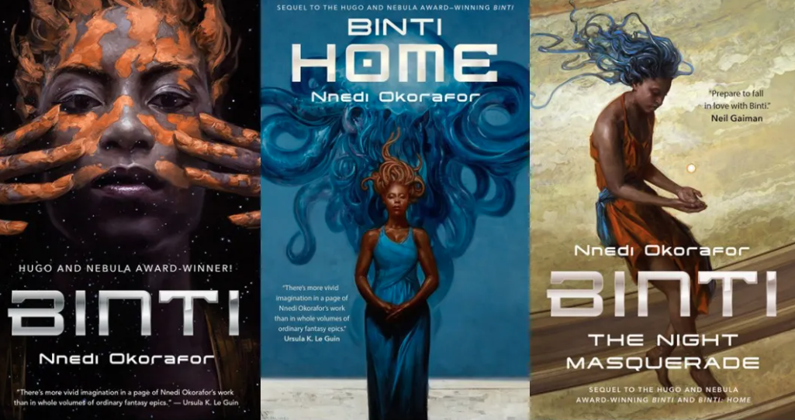 《宾蒂》三部曲是探讨“非洲未来主义”绕不过去的关键作品
专题5B：Walls, Maps, Deserts: Unreal Geographies / 高墙、地图与沙漠：非真实地理
在这个有关文学地理学的专题中，皇家霍洛威学院的Gwilym Eades探讨了地理与地图等概念在科幻小说中的体现。他首先介绍了地图与叙事之间的联系，指出二者都是对某种空间结构的建构。随后，他对弗兰克·赫伯特的《沙丘》（Dune）, 布莱恩·奥尔迪斯的《海利科尼亚》（Helliconia）, 以及厄休拉·勒古恩的《永归之路》（Always Coming Home）三部小说的故事背景，以及故事“前言”或“附录”中绘制的地图。他引用了John Reider关于后殖民主义与科幻小说的相关论述，指出科幻小说的“制图学”(Cartography)可以为我们提供一个崭新的视角，来研究边缘群体与中心霸权之间的权力关系。在Eades看来，三个故事之中，只有勒古恩的作品真正打破了边缘与中央的边界，用地图刻画了一个不同于旧有殖民权力话语的新空间。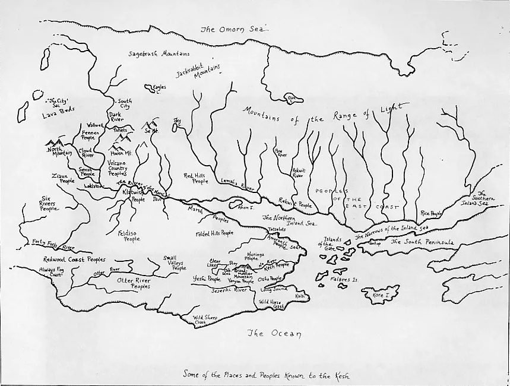 图为勒古恩为其作品绘制的地图。在英国，文学地理学与科幻小说之间的跨学科研究是学术界的热点话题
北卡罗来纳大学格林斯伯勒分校（The University of North Carolina at Greensboro）的Emily Hall探讨了李昌来的重要作品《满潮之上》（On Such a Full Sea），以及监控、边界等概念在重新构建民族想象时产生的影响。在故事里，虽然主人公所在的城市被大公司隔离成三个区域，分别居住着三个社会阶层，但这样的隔离并不是绝对意义上的隔离。高墙上遍布摄像机，因此不同区域的人得以有机会见到其他地区的景象。而这些景象无疑有着强烈的政治意图，可以被视为“生命政治”(Biopolitics)的某种运作方式。在故事里，主人公在不同空间不断穿行，因此发展出不同的身份认同，并且在这一过程中，证明了“民族”概念可以被外在环境所建构，最终服务于不同的政治目的。
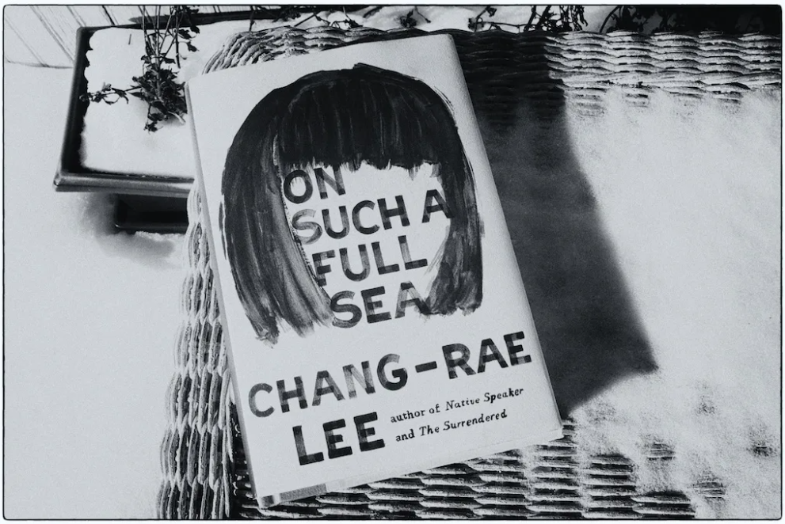 “On Such a Full Sea”这一标题取自莎士比亚《裘里乌斯·凯撒》
在最后，约克圣约翰大学（York St John University）的Adam Stock介绍了“沙漠”与“荒原”等意象在科幻与废托邦小说中的体现。在他看来，在后浪漫主义（post-Romantic）的西方东方主义想象中，沙漠是远古、神话、化石和废墟的永恒来源。这样的空间近乎空旷，极少有人居住，因而是书写狂放幻想、跨时空冒险的理想场所，寄托了晚期资本主义环境在空间上和时间上疏离的想象力。通过一些具体的相关作品，比如奥克塔维娅.E.巴特勒（Octavia Estelle Butler）的故事集《莉莉丝的蛋》(Lilith’s Brood)、电影《银翼杀手2049》和《等待野蛮人》（Waiting for the Barbarians），以及Alexis Wright的《天鹅之书》（The Swan Book），Stock认为，著名地理学者Doreen Massey在批判地理学（Critical Geography）方面的相关思考有助于我们理解沙漠和荒原所蕴含的空间意义。
说起科幻中的“沙漠”，我们怎么能错过《沙丘》和怪物“沙虫”
专题6A：Science Fiction: Capitalist Tool, Revolutionary Weapon
科幻小说：资本主义工具和革命武器
老吕旁听的最后一个专题再一次将科幻文学与资本主义批判相联系。首先，东南路易斯安那大学（Southeastern Louisiana University）的Brittany R. Roberts为我们介绍了俄罗斯科幻作品，即Victor Pelevin的《P世代》（Generation П；英文版译为 “Homo Zapiens”）。她指出，正如伊利亚·卡巴科夫（Ilya Kabakov）等苏联后现代主义思想家所表明的那样，在苏联解体后，俄罗斯弥漫着一种深刻的语义空虚。1990年代初，当俄罗斯从苏联式的共产主义跨越到后苏联自由市场资本主义的边界时，苏联的文化标志和符号似乎在一夜之间被清算，留下了空缺的文化和意识形态空间。在《P世代》中，作者Pelevin认为，苏联体制崩溃后沉积的意识形态空虚很快被另一种空虚所掩盖：消费资本主义及其伴随的广告业。在故事主人公开始融入越来越高层次的资本主义以及由此衍生的企业和政治权力时，他发现，作为俄罗斯人的意义已经变得难以确定。进而Roberts强调，当Pelevin描写外国投资者蜂拥进入新的、狂热的资本主义社会时，俄罗斯的民族认同感已经成为后苏联国家的第一个重要资本主义商品。
 《P世代》在2011年被改编为同名电影，导演是Victor Ginzburg
《P世代》在2011年被改编为同名电影，导演是Victor Ginzburg
随后，西班牙萨拉戈萨大学（University of Zaragoza）的Pablo Gómez-Muñoz从“廉价经济学”（Cheaponomics）的角度出发，解读了当代科幻电影中涉及的地理与身体等元素。他强调，廉价商品的真实价格很少由购买它们的人支付，而是由其他人群、物种和自然环境来偿还。通过讨论Neil Smith以及David Harvey对于资本主义话语中不均衡性的探讨，Gómez-Muñoz指出在很多科幻电影中，社会与跨国公司会要求员工主动或被动“加工”自己的身体，以提升自身的生产力，这些作品包括《缩小人生》（Downsizing），《抱歉打扰》（Sorry to Bother You）, 《优越》（Advantageous）, 《灵魂转移》（Transfer）, 《睡眠经销商》（Sleep Dealer）, and 《玉子》（Okja）等等。因此，Gómez-Muñoz指出，在如今新自由主义大行其道的当代社会，过度追求低成本与低价格的经济与商业竞争不仅会加剧贫富分化，还会在其它方面，例如生态环境，产生深远的负面影响。
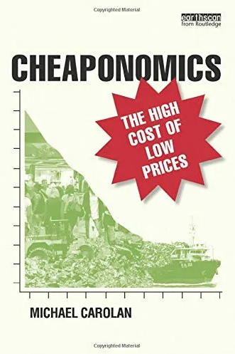 “廉价经济学”为我们研究晚期资本主义话语提供了一个新的角度
主旨演讲二：Florence Okoye
Caliban at the boiler: rendering speculative fiction as plantation hardware
在会议最后，知名艺术家，独立学者Florence Okoye再次同我们一同探讨了科幻作品与未来想象在后殖民语境中的作用。她首先介绍了科学与技术为当代社会带来的影响，这些影响有正面也有负面，但一言以蔽之，科技改变了人们在所属社会话语中所遵循的价值观和信仰。她相信，包括科幻与奇幻作品在内的“推测小说”（Speculative Fictions）为“当代性”叙事提供了新的平台。她引用了英国学者David Arnod的后殖民理论，认为在十九世纪，欧洲的身份认同建构在对海外属地的殖民统治之上，权力因此得以作为中心的欧洲向外辐射，逐渐渗透到殖民地的各个角落。Okoye随后着重探讨了19世纪由英国绘制的牙买加地图，以及分布在牙买加各地的种植园分布图，并解释了地图中蕴含的权力关系。
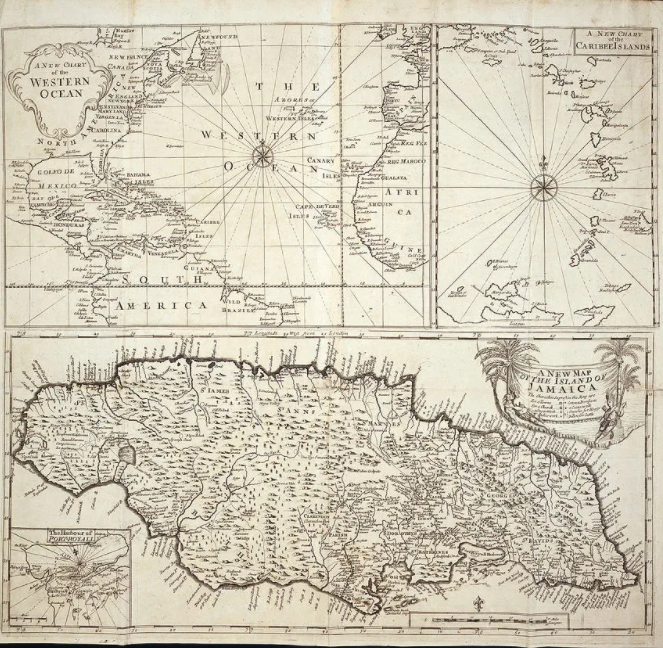 这是一幅18世纪的牙买加地图
通过展示她收集到的历史文献，Okoye向我们展示了在牙买加种植园中涌现的技术创新，并指出，这些旨在提高生产力和生产效率的创新，可以被视为“未来主义”（Futurism）的某种呈现方式，提供了某种乌托邦式的叙事空间。她引用了Serpil Opermann的文章《英国殖民小说中的生态帝国主义》（Ecological Imperialism in British Colonial Fiction），强调了“科学”这一概念本身即体现了精神与物质之间笛卡尔式的二元对立。在理性之上的科学时代，自然与身体被视为理性权力的客体，甚至在资本的凝视中变为可以交换的商品。在她看来，这种情况亟需人们加以反思，而“推测类”小说作为想象或然性与可能性的重要体裁之一，在这一反思过程中能够发挥无可替代的作用。
18世纪的未来主义想象显示出浓厚的“祛魅”特征
会议回顾汇总：
8. 伦敦科幻研究协会 LSFRC: 进行中的项目 (Work in Progress)
7. 利兹大学：当代中国类型文学及海外接受
6. 伦敦大学伯贝克学院：生产性未来：科幻小说中的政治经济
5. 兰卡斯特大学：幻想与身体 (Embodying Fantastika)
4. 伦敦大学亚非学院(SOAS)：非洲与亚洲的未来意象
3. 牛津大学：科幻中的种族、性别与科技（最终章）
2. 牛津大学：科幻中的种族、性别与科技（二）
1. 牛津大学：科幻中的种族、性别与科技（一）